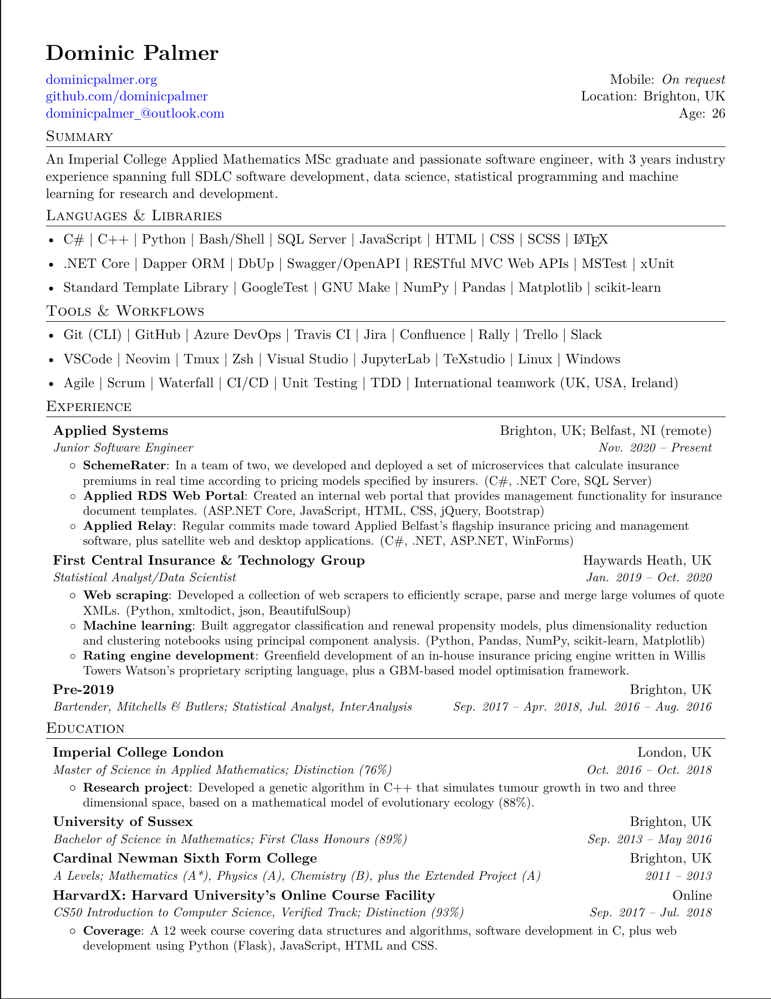

<hr>

<p class="article-text article-content-start">
  <div id="cv-base">
    <div class="cv-control">
      <button class="cv-button">
        <a id="cv-download-link" href="../assets/docs/dominic-palmer-cv.pdf" download="dominic-palmer-cv.pdf">Download</a>
      </button>
    </div>

    <div class="cv-control">
      <form class="cv-form" method="get" action="../assets/docs/dominic-palmer-cv.pdf">
        <button class="cv-button" type="submit">View Fullscreen</button>
      </form>
    </div>
  </div>
</p>

<object width="97%" height="134" data="../assets/docs/dominic-palmer-cv.pdf" type="application/pdf">
  </img>
</object>
